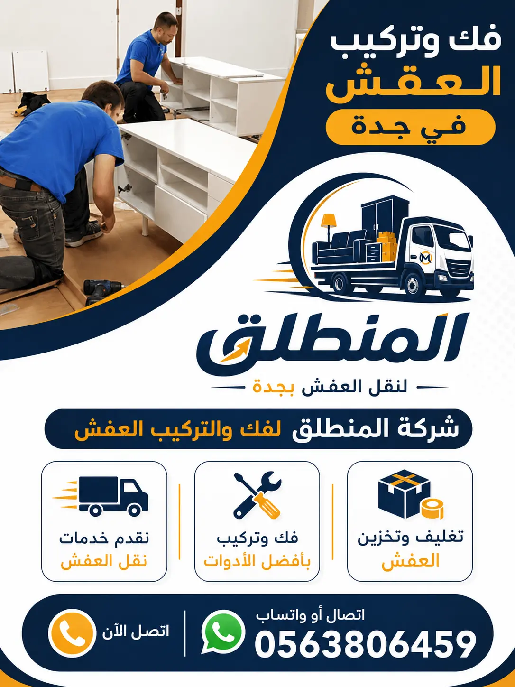

1. مميزات خدمة فك وتركيب الأثاث بجدة بأعلى معايير الجودة والاحترافية
تُعتبر عمليات تفكيك وإعادة تجميع العفش والموبيليا من أهم المراحل المفصلية التي ترتكز عليها سلامة الممتلكات أثناء الانتقال أو إعادة الديكور المنزلي والتجاري. نحن في شركة نقل عفش بجدة (المنطلق) ندرك تمامًا التفاصيل الفنية الدقيقة التي تحتاجها كل قطعة أثاث، بدءًا من الخشب الطبيعي كالزان والأرو وصولاً إلى الخشب المضغوط والأثاث المودرن والسويدي. يمكنك أيضاً التعرف على خيارات نقل عفش جدة بالفك والتغليف الكامل. تتميز خدمة فك وتركيب الأثاث بجدة التي نقدمها بكونها تعتمد على منهجية هندسية احترافية تهدف لحماية القطع من الخدوش أو التلف أو التفكك المستقبلي. يتعامل فريقنا من معلم فك وتركيب أثاث جدة مع مختلف الماركات العالمية والمحلية باحترافية استثنائية، حيث نستخدم أحدث المعدات الكهربائية كالدرل اللاسلكي والمفكات الموزونة رقمياً لضمان الفك والتركيب بدون إجهاد للبراغي أو المفصلات الخشبية.
إن نجاح خدمة التفكيك والتركيب لا يتوقف فقط على المهارة اليدوية، بل يمتد ليشمل حلول التكامل الشاملة؛ ولذلك نقوم بدمج التفكيك مع خدمة تغليف الأثاث بجدة لحماية المفصلات، الإكسسوارات، الألواح الخشبية والقطع الزجاجية الحساسة فور تفكيكها مباشرة. يمتلك خبرؤنا ونجارونا معرفة عميقة بكيفية الترقيم التسلسلي للأجزاء وتوثيق موقع كل برغي وصامولة في أكياس مخصصة ومبوبة، مما يضمن أن إعادة التركيب في الموقع الجديد تتم بنفس هيئة المصنع الأصلية تماماً ودون فقدان أي قطعة صغيرة. يتيح لك الاعتماد على نجار فك وتركيب غرف نوم جدة المحترف لدينا تجنب الأخطاء الشائعة التي يقع فيها العمال غير المختصين، مثل اتساع ثقوب البراغي أو عدم موازنة أبواب الدواليب والأدراج.
علاوة على ذلك، تتميز خدماتنا بالتغطية الميدانية الشاملة لكافة أحياء مدينة جدة دون استثناء، سواء كنت تقطن في أحياء الشمال مثل حي الروضة، حي البساتين، حي الزهراء، أو أحياء الوسط والشرق مثل حي الصفا، حي المروة، حي السلامة، وحي الحمدانية. يتواجد لدينا فني تركيب أثاث بجدة جاهز للانطلاق فور اتصالكم، مع توفير خدمة شركة نقل عفش بجدة متكاملة تشمل الأسطول المجهز والشاحنات المقفلة المخصصة لحماية الخشب والمفروشات من الغبار والحرارة والعوامل الجوية. وللراغبين في الاحتفاظ بالأثاث مؤقتاً، نوفر أيضاً تخزين الأثاث بجدة بمستودعات آمنة ومكيفة. إن التزامنا الصارم بالدقة في المواعيد، السرعة في الإنجاز، وتقديم ضمان شامل مدعوم بخصومات حقيقية تصل إلى 40% تجعلنا دائماً الخيار الأول والوجهة المضمونة لجميع العائلات والمؤسسات في جدة.
نحن نضع بين يديك خبرة أكثر من 10 سنوات في التعامل مع تعقيدات الأثاث المكتبي، غرف النوم الإيطالية والتركية، المطابخ الجاهزة والتفصيل، والمكيفات بمختلف أنواعها. نضمن لك الحصول على خدمة نجار متنقل بجدة يعمل على مدار الساعة لتقديم الدعم الفني السريع، وتقديم استشارات مجانية حول كيفية توزيع الأثاث وإعادة تركيبه بالطريقة التي تستغل المساحات المتاحة في منزلك الجديد بالشكل الأمثل والأنسب لديكوراتك. كما يمكنك قراءة المزيد في مقالنا الشامل عبر دليل فك وتركيب الاثاث بجدة.
أسعار رخيصة
خصم يصل 40%
خدمة سريعة
24 ساعة طوال الأسبوع
فنيين محترفين
معلمين ونجارين خبرة
ضمان شامل
تأمين حقيقي على العمل
2. لماذا تختار شركة المنطلق كأفضل شركة فك وتركيب أثاث بجدة؟
عند التفكير في الانتقال إلى منزل جديد أو تجديد ديكورات مكتبك، يبحث الجميع عن الجهة الأكثر أماناً واحترافية التي تحفظ للموبيليا قيمتها الجمالية والمادية. تُعد منصة المنطلق الخيار الأرقى والأكثر ثقة، ويمكنك التعرف على رؤيتنا وأهدافنا عبر زيارة صفحة عن شركة المنطلق لنقل العفش. السبب الرئيسي وراء تصدرنا كأفضل شركة فك وتركيب أثاث بجدة يكمن في اختيارنا الدقيق لطاقم العمل والنجارين؛ حيث لا نعمل سوى مع فنيين يمتلكون سجلات حافلة بالخبرات العملية والمؤهلات الميدانية، والمدربين على التعامل مع أحدث أنظمة الفك والتركيب الحديثة المعمول بها في كبرى دور الأثاث العالمية. كما يتكامل عملهم مع خيرة عمالة نقل الأثاث بجدة المدربة.
إن اختيارك لخدماتنا في شركات نقل عفش بجدة المحترفة يمنحك راحة البال الكاملة ويوفر عليك العناء والجهد الكبير. فنحن نحرص على تطبيق أعلى معايير السلامة المهنية لحماية جدران المنزل، الأرضيات، والأثاث نفسه من التخدش أو الصدمات أثناء عملية التفكيك أو التجميع. نستخدم معدات حماية متطورة تشمل بطانيات حماية الأخشاب، البلاستيك الفقاعي المقوى، والأشرطة اللاصقة الخالية من الأثر الشمعي. كما ننفذ الشحن والتنقل بواسطة شاحنات حديثة مغلقة ومبطنة من الداخل عبر خيارات دينا نقل عفش جدة، مما يضمن وصول الأثاث بحالته الأصلية دون أي تغير.
كما نتميز بالتكامل والشمولية في باقاتنا الخدمية؛ حيث نتيح لعملائنا خيار نقل عفش بجدة مع التغليف والفك والتركيب في عقد واحد مدمج يوفر أكثر من 30% من التكلفة الإجمالية مقارنة بطلب كل خدمة بشكل منفصل. نوفر أدوات ومعدات رفع متطورة كالأوناش الهيدروليكية الحديثة لرفع وتنزيل الأجزاء الثقيلة مثل قطع الدواليب الضخمة، الرخام، والأجهزة الكبيرة عبر ونش نقل عفش هيدروليكي بجدة لرفع العفش للأدوار العليا بكل أمان ويسر ودون تعريض السلالات المنزلية أو المداخل المزدحمة للضرر.
نحن لا نكتفي بإنهاء الفك والتركيب فحسب، بل نقدم خدمة المعاينة الميدانية والتأكد من ضبط توازن الأثاث النهائي عبر استخدام الموازين المائية والرقمية. كما يقوم نجارونا بتقديم خدمات الصيانة الفورية للأثاث المستعمل، مثل استبدال المفصلات التالفة، شد المفصلات المترخية، وتزييت المجرى الخاص بالأدراج والمجرى السحاب لدواليب الملابس. كل هذه الامتيازات تأتي مصحوبة بضمان كتابي صريح وحقيقي يشمل الخدمة بالكامل، ليضمن حق العملاء ويؤكد على شفافيتنا المطلقة ومصداقيتنا التي بنيناها على مدار سنوات طويلة من العمل الدؤوب بجدة. اقرأ مقالنا المتخصص عن لماذا نحن افضل شركة فك ونقل عفش بجدة.
3. أنواع الأثاث والموبيليا التي نقوم بفكها وتركيبها بجدة
تتطلب عملية الفك والتركيب خبرة متخصصة ومقومات فنية متنوعة تراعي الاختلاف الكبير بين خامات الأثاث وأنواعه المتعددة. نحن نمتلك المعرفة والخبرة الكافية للتعامل مع مختلف الموديلات، بدءًا من قطع الأثاث الكلاسيكي المصنوع من الخشب الزان الثقيل والتطعيمات العاجية والصدفية، وصولاً إلى الأثاث العصري الحديث (المودرن) والأثاث المعدني أو الزجاجي المعقد. يمكنك التعرف على تنوع خدماتنا عبر زيارة قسم كافة خدمات نقل الأثاث بجدة.
يشمل عملنا فك وتركيب الأثاث الخشبي السويدي والمحلي، الأثاث المائل للتعقيد مثل المكتبات الحائطية، غرف النوم المزدوجة، الأسرة الطبقية للأطفال، المجالس العربية والأوروبية، ووحدات التلفاز الجدارية. يتم استخدام أدوات فك مخصصة تمنع حدوث أي اتساع في ثقوب البراغي أو تلف الخواواب الخشبية الداخلية، مع الحفاظ الكامل على الهياكل كما وردت من الشركة المصنعة وتأمين الشحن عبر خدمات دينا نقل عفش جدة.
كما نقدم خدمات مخصصة للقطاعات الفندقية والتجارية عبر قسم نقل وفك أثاث الفنادق بجدة، بالإضافة إلى خدمات المنازل عبر نقل أثاث سكني بجدة وعبر الفلل الفاخرة في نقل أثاث الفلل بجدة. مهما كان نوع الأثاث أو مادة تصنيعه، فإن نجارين وفنيي شركة المنطلق يمتلكون المهارة المطلوبة لإنجازه في أسرع وقت وبأعلى دقة.
4. نجار فك وتركيب غرف نوم بجدة (صيني، إيطالي، وتفصيل)
تُعتبر غرف النوم من أهم القطع المركزية في كل منزل، حيث تحتوي على قطع كبيرة وحساسة كالدواليب الضخمة ذات الأبواب السحابة أو المفصلية، الأسرّة ذات الهياكل الهيدروليكية، التسريحات المزودة بالمرايا الزجاجية، والكومودينو. يتطلب التعامل معها نجاراً محترفاً متخصصاً في فك وتركيب ونقل غرف النوم بجدة لضمان عدم حدوث أي اختلال في زوايا الدواليب أو كسر في المرايا والزجاج.
يتعامل نجار فك وتركيب غرف نوم جدة لدينا مع كافة الموديلات الوطنية والمستوردة: غرف النوم الإيطالية الفاخرة، الغرف التركية المودرن، الغرف الصينية الكلاسيكية، وغرف النوم التفصيل المصنوعة من الخشب الزان والكونتر. يقوم النجار بفصل الأجزاء بحرص، ترقيم الأبواب والأرفف، وتجميع المسامير والبراغي في أكياس مبوبة لمنع ضياعها. كما يحرص على حماية زوايا الأخشاب بتغليفها بالنايلون الفقاعي عبر خدمات تغليف الأثاث بجدة قبل النقل عبر خدمة نقل عفش جدة المتكاملة.
وعند مرحلة إعادة التركيب في الغرفة الجديدة، يتم موازنة السرير والدولاب باستخدام الميزان المائي لمنع ميلان الأبواب أو احتكاك الأدراج. كما يُجري النجار الصيانة اللازمة للمفصلات والمجرى السحاب لتتحرك بسلاسة تامة. نوفر هذه الخدمة بأسعار تنافسية تناسب الجميع مع الضمان الكامل عبر كادر فني متميز من عمال نقل عفش بجدة.
5. فني تركيب أثاث ايكيا بجدة – نجار متخصص بحرفية عالية
يتميز أثاث شركة ايكيا (IKEA) الشهيرة بتصاميمه العملية والعصرية الممتازة، لكنه في الوقت ذاته يتطلب خبرة هندسية ودقة عالية ودراية واسعة بالكتالوجات وطرق التجميع المعقدة. إن محاولة فك أو تركيب منتجات ايكيا دون استعانة بـ فني تركيب أثاث ايكيا جدة خبير قد يؤدي إلى تلف ألواح الخشب المضغوط (MDF)، اتساع أماكن البراغي البلاستيكية، أو تركيب المفصلات في اتجاهات خاطئة تتسبب في عدم إغلاق الأبواب والأدراج بسلاسة.
يمتلك فنيو شركة المنطلق المعرفة الكاملة بكافة موديلات ايكيا المتنوعة، مثل دواليب الملابس من سلسلة باكس (PAX)، وحدات التخزين والمكتبات من سلسلة كالاكس (KALLAX) وبستاه (BESTÅ)، الأسرة القابلة للتمديد، وطاولات الطعام القابلة للطي. فنحن نتبع التعليمات والكتالوجات الرسمية لكل قطعة بدقة متناهية، ونستخدم الأدوات الخاصة التي توصي بها الشركة لمنع أي ضغط زائد على المفاصل أو الخشب أثناء الربط والتثبيت.
إذا كنت تود نقل قطعة أثاث ايكيا مستعملة من مكان لآخر أو قمت بشراء أثاث جديد من معرض ايكيا بجدة وتحتاج إلى نجار متخصص لتركيبه فوراً في منزلك، فإننا نتيح لك التواصل المباشر والسريع عبر زيارة صفحة تواصل مع نجار فك وتركيب أثاث بجدة. سيعمل فنيونا على التواجد لديك في الموعد المحدد ومزودين بكافة قطع الغيار والمسامير التكميلية والمستلزمات الحائطية لتثبيت الدواليب رفيعة المستوى والمكتبات بالجدار لحمايتها من السقوط.
إن خدمة تفكيك وتجميع ايكيا التي نقدمها تتمتع بالسرعة الكبيرة والدقة المتناهية، مع توفير أسعار تنافسية للغاية جعلتنا نعتبر بحق أفضل شركة نقل عفش بجدة توفر خدمات أثاث ايكيا المتخصصة مع الضمان الكامل ضد أي عيوب فنية أو أخطاء في التركيب.
6. فك وتركيب مطابخ بجدة (ألمنيوم، خشب، وقص الرخام الطبيعي والصناعي)
تُعد المطابخ من أكثر أجزاء المنزل تعقيداً وأهمية أثناء عمليات الانتقال وإعادة الديكور؛ نظراً لاحتوائها على تفاصيل فنية متعددة تشمل الدواليب الخشبية أو الألمنيوم، الرخام الطبيعي أو الصناعي، وتوصيلات السباكة والكهرباء والغاز. يتطلب التعامل معها وجود فني مقتدر يجمع بين مهارات النجار وفني الألمنيوم لمعالجة أي مقاسات متغيرة بين المطبخ القديم والمطبخ الجديد. تقدم لك الشركة حلولاً متكاملة عبر صفحة خدمات نقل وفك المطابخ بجدة المخصصة لهذا الغرض.
يتولى فريقنا تفكيك المطابخ بجميع أنواعها وموديلاتها، سواء كانت مطابخ ألمنيوم حديثة، مطابخ خشبية كلاسيكية، مطابخ ايكيا الذكية، أو مطابخ الخشب المضغوط والفورميكا. تبدأ العملية بفصل التيار الكهربائي وإغلاق خطوط المياه والغاز، ثم تفكيك الأجهزة المدمجة مثل الشفاطات والأفران والشفاطات الإيطالية بحرص شديد. بعد ذلك، يتم فصل أحواض المجالي والرخام وتغليف كل لوح ورخامة بخامات حامية تمنع الشروخ والكسور أثناء التحميل والتنقل عبر دينا نقل عفش جدة.
أحد أهم الخدمات الاستثنائية التي نقدمها في جدة هي إمكانية التعديل والقص الميداني؛ فعندما تختلف مساحة المطبخ الجديد عن المطبخ السابق، يقوم فنيونا بقص الرخام الطبيعي والصناعي بجهاز السنوفر المائي المخصص، وتعديل زوايا الدواليب الخشبية والألمنيوم، وإضافة رفوف جديدة أو تقليل أطوالها لتتناسب تماماً مع الجدران والمساحة الجديدة دون التضحية بالمنظر الجمالي العام للمطبخ.
ولضمان حصولك على راحة منزلية شاملة دون الحاجة للاستعانة بفنيين خارجيين، نوفر أيضاً بالتوازي مع تركيب المطبخ خدمة فك وتركيب مكيفات بجدة لفصل ونقل وتثبيت المكيفات في المطبخ وغرف المنزل الأخرى وتوصيل خطوط السباكة والكهرباء بنجاح وأمان كاملين عبر نقل الأجهزة الكهربائية بجدة.
7. فك وتركيب أثاث المكاتب والشركات والمؤسسات بجدة
يحتاج أثاث المكاتب والشركات والمؤسسات التجارية إلى أسلوب منظم يراعي السرعة والدقة لتفادي تعطيل الأعمال. نقدم في شركة المنطلق خدمات متخصصة لـ فك وتركيب أثاث المكاتب بجدة تشمل فك مكاتب المدراء، طاولات الاجتماعات، أرفف الأرشيف، ودواليب المستندات السرية والمعدنية.
يقوم نجارونا بتفكيك قواطع العمل الذاتية (Partitions) وتغليف الشاشات وأجهزة الحاسوب بمواد مضادة للكهرباء الساكنة عبر تغليف الأثاث بجدة. كما يتم وضع ملصقات ترقيم تسلسلية على كل مكتب لضمان إعادة تجميعه وتركيبه في المقر الجديد بنفس الترتيب والتنظيم الإداري السابق عبر طاقم من عمال نقل عفش بجدة.
نوفر عقود عمل خاصة للشركات بأسعار مخفضة وخدمات منفذة خلال عطلات نهاية الأسبوع، مما يضمن استئناف نشاط العمل في المقر الجديد دون أي تأخير. كما تتوفر لدينا خدمات نقل وفك أثاث الفنادق بجدة للمشاريع الكبرى.
8. خطوات فك وتركيب وتغليف العفش بطريقة آمنة بجدة
إن الأسلوب المنظم والمخطط هو الفارق الجوهري بين العمل الاحترافي والعمل العشوائي في مجال فك وتركيب الأثاث. نعتمد في شركة المنطلق خطة عمل خماسية مدروسة تضمن أعلى معدلات الأمان والكفاءة أثناء مراحل العمل المختلفة. تبدأ الخطوة الأولى بالمعاينة الفنية الشاملة لجميع القطع؛ حيث يقوم مشرف الفريق بفحص الأثاث قبل التفكيك، وتصوير نقاط الوصل المعقدة، والتحقق من حالة المفصلات والأخشاب لتسجيل أي ملاحظات سابقة وضمان التعامل مع كل قطعة بالطريقة الأنسب لها.
تتمثل الخطوة الثانية في الفك المنظم والترقيم التسلسلي؛ حيث يبدأ النجارون في تفكيك القطع بدءاً من الأجزاء العلوية والإكسسوارات الفردية، مروراً بالأبواب والرفوف الداخلية، وصولاً إلى الهياكل الأساسية والقواعد. يتم وضع ملصقات ترقيم واضحة على كل جزء توضح اتجاهه وموقعه (مثل: أبواب الدولاب الأيمن، الرف الأوسط، إلخ). كما تجمع كل مجموعة من البراغي والمفصلات والإكسسوارات الخاصة بالقطعة داخل أكياس شفافة مخصصة وتلصق بالهيكل الخاص بها، لمنع اختلاط الأدوات أو ضياع البراغي الصغيرة.
أما الخطوة الثالثة فهي مرحلة الحماية والتغليف الفوري؛ حيث نقوم بتطبيق خامات خدمة تغليف الأثاث بجدة المخصصة لكل مادة. نغلف الألواح الخشبية بالنايلون الفقاعي والبلاستيك الممتد (السترتش) لحمايتها من الغبار والتخديش، بينما يتم تغليف الزجاج والمرايا بالكرتون المقوى والشريط اللاصق السميك لتفادي الكسر. وفي حال الحاجة لحفظ الأثاث لفترات مؤقتة قبل التركيب في المنزل الجديد، نوفر لعملائنا خيار التخزين عبر مستودعات تخزين الأثاث بجدة المؤمّنة والمعزولة ضد الرطوبة والحشرات. اقرأ المزيد عن نصائح التغليف عبر دليل كيفية تغليف الأثاث.
تأتي الخطوة الرابعة ممثلة في النقل الآمن والتجمعات الميدانية؛ حيث تنقل القطع بواسطة عمالة مدربة على حُسن التحميل والتثبيت داخل السيارات المقفلة أو الاعتماد على ونش رفع عفش بجدة للأدوار العليا. بينما تتضمن الخطوة الخامسة والنهائية مرحلة التجميع والتركيب الضابط في الموقع الجديد؛ حيث يعيد الفنيون تركيب الأثاث بدقة متناهية مطابقة للكتالوج أو التصميم الأصلي، وتعديل استقامة الأبواب، تزييت المفاصل، وتثبيت الدواليب بالجدران بمسامير أمان في حال الرغبة، لضمان استقرارها التام وحماية الأطفال والعائلة.
9. فك وتركيب الأجهزة الكهربائية والمكيفات والمقتنيات الثمينة بجدة
لا تقتصر خدماتنا على الأثاث الخشبي والمطابخ فحسب، بل تمتد لتشمل فك وتركيب الأجهزة الإلكترونية والمستلزمات الكهربائية من خلال قسم فك ونقل الأجهزة الكهربائية بجدة. يتولى فنيو الكهرباء والتكييف التعامل مع الشاشات العملاقة، التلفزيونات الجدارية، النجف والثريات الكريستالية، وأنظمة الإضاءة الحديثة.
فيما يخص المكيفات، نوفر فنيي تكييف متمرسين لـ فك وتركيب مكيفات بجدة (السبلت والشباك)، مع سحب وتثبيت غاز الفريون بحرص، تنظيف الفلاتر، وتثبيت الوحدات الخارجية والداخلية بالموقع الجديد واختبار كفاءة التبريد قبل المغادرة.
كما نهتم بنقل المقتنيات الثمينة مثل الساعات الحائطية الكلاسيكية، التحف واللوحات الفنية عبر وضعها داخل صندوق خشب خافي للصدمات لحمايتها من أي اهتزاز أثناء السير عبر شركة نقل عفش جدة.
10. أسعار فك وتركيب الأثاث في جدة | جدول مقارنة وتفاصيل التكلفة 2026
تُعتبر مسألة التكلفة والشفافية في التسعير من أهم المحاور التي يشغل العملاء بالهم بها عند البحث عن أرخص خدمة فك وتركيب أثاث بجدة. في شركة المنطلق، نعتمد سياسة التسعير العادل والمرن الذي يتناسب تماماً مع الحجم الفعلي للعمل المطلوب دون أي زيادة أو رسوم مخفية بعد بدء التنفيذ. نحرص دائماً على أن نقدم أرخص الأسعار مقارنة بما يقدمه السوق في شركات نقل العفش بجدة، مع الحفاظ الكامل على أقصى مستويات الجودة والاحترافية والضمان الفعلي. تعرّف على مزيد من التفاصيل في المقال الخاص بـ اسعار نقل وتفكيك العفش بجدة.
تعتمد أسعار فك وتركيب العفش بجدة على مجموعة من المعايير الفنية الواضحة، ومن أبرزها: عدد ونوعية قطع الأثاث المراد فكها وتركيبها (غرف نوم، مطابخ، دواليب، مكاتب)، الماركة والتصميم الفني للقطع (مثل قطع ايكيا التفصيلية التي تتطلب وقتاً وجهداً أكبر من الأثاث التقليدي)، مدى الحاجة لاستخدام خامات تغليف إضافية حامية، وعدد الطوابق ومدى توفر المصاعد أو الحاجة لاستخدام الأوناش الهيدروليكية. كما يمكنك الاطلاع على تنوع خدماتنا المتاحة من خلال قسم كافة خدمات نقل الأثاث بجدة لاختيار الباقة التي تناسب تطلعاتك وميزانيتك.
نحن نوفر عروضاً خاصة وحصرية للعائلات والمؤسسات والشركات ذات العقود الكبيرة، حيث تتضمن الباقات الكاملة خصماً يصل إلى 40% عند جمع خدمات الفك والتركيب مع الشحن والتغليف. ولتوفير الشفافية التامة، نضع بين يديك هذا الجدول الذي يوضح متوسط التكلفة التقريبية لخدمات الفك والتركيب داخل جدة:
| نوع الخدمة التفصيلية | نطاق السعر (ريال سعودي) | المميزات والتفاصيل المشمولة |
|---|---|---|
| فك وتركيب غرفة نوم كاملة | 250 - 400 | فك الدولاب، السرير، التسريحة، الكومودينو وموازنتها |
| فك وتركيب مطبخ (خشب / ألمنيوم) | 300 - 600 | شاملة الدواليب، الرفوف، وفصل/توصيل المجالي والرخام |
| فك وتركيب دواليب كبيرة (4-6 أبواب) | 200 - 350 | مع ترقيم الأجزاء وتعديل الأبواب السحابة والخصلات |
| تركيب أثاث ايكيا (بالقطعة) | 80 - 150 | تركيب دقيق عبر فني متخصص حسب الكتالوج الأصلي |
| فك وتركيب مكيفات (سبلت / شباك) | 100 - 200 | فصل وتثبيت وموازنة وفحص غاز الفريون بالكامل |
| فك وتركيب كنب ومجالس وطاولات | 150 - 300 | تفكيك الأرجل والهياكل وحماية الأقمشة والجلد |
| حزمة فك وتركيب ونقل منزل كامل | 999 - 2500 | خصم مدمج 40% شامل الفك والتركيب والتغليف والنقل |
للحصول على تقييم دقيق وسريع، يسعدنا تواصلك المباشر مع ممثلي الخدمة عبر الهاتف أو الواتساب، حيث نقوم بإرسال مندوب معاينة مجاني أو تقديم تقدير فوري بناءً على صور الأثاث. نعدكم دائماً في أفضل شركة نقل أثاث بجدة بتقديم الخدمة الأعلى جودة بالتعريفة الأنسب لميزانيتكم.
الأسئلة الشائعة والأجوبة الشاملة حول فك وتركيب الأثاث بجدة
نستعرض معكم إجابات تفصيلية ودقيقة لأبرز الاستفسارات والأسئلة الشائعة التي يتداولها العملاء بجدة حول خدمات التفكيك والتركيب والضمان والأسعار، وللمزيد من النصائح والإرشادات يمكنك دائماً قراءة مقالاتنا عبر مدونة نصائح فك ونقل الأثاث:
1. كم سعر فك وتركيب الأثاث بجدة بالتفصيل؟
تبدأ تكلفة خدمات الفك والتركيب من 150 ريال سعودي للقطع البسيطة والفردية. بينما تتراوح تكلفة فك وتركيب غرفة النوم الكاملة بين 250 إلى 400 ريال سعودي. تختلف التكلفة بناءً على عدد القطع، نوع الأثاث، والماركة (مثل ايكيا أو الأثاث التفصيل)، ونوفر خصومات تصل إلى 40% عند إضافة خدمات النقل والتغليف الشاملة عبر شركة نقل عفش جدة.
2. كيف أضمن عدم خدش أو تلف الأثاث أثناء الفك والتركيب؟
نضمن لك الحماية الكاملة من خلال استخدام معدات فك كهربائية حديثة وموزونة وتغليف الأثاث بالنايلون الفقاعي والكرتون المقوى عبر خدمة تغليف الأثاث بجدة فور تفكيكه مباشرة. كما نقدم ضماناً كتابياً شاملاً يعوض العميل بشكل فوري في حال حدوث أي خدش أو تلف لا قدر الله، وذلك يرسخ موقعنا بصفتنا المنطلق لنقل وتفكيك العفش بجدة الأكثر أماناً.
3. هل توفرون نجار متخصص لفك وتركيب أثاث ايكيا بجدة؟
نعم بالتأكيد، نمتلك طاقماً من الفنيين والنجارين المتخصصين الحاصلين على تدريبات متقدمة في التعامل مع جميع موديلات ايكيا وفق كتالوجات التصنيع الأصلية، مما يضمن تركيب الأثاث وتثبيته في الحوائط بأعلى دقة وأمان.
4. هل تقومون بفك وتركيب المطابخ وقص الرخام وتعديل المقاسات؟
نعم، نوفر فنيين متمرسين عبر صفحة نقل وتعديل المطابخ بجدة لفك وتجميع المطابخ الخشبية والألمنيوم، مع إمكانية قص الرخام الطبيعي والصناعي وتعديل أطوال الدواليب وزواياها لتتناسب تماماً مع مساحة ومخطط المطبخ الجديد بجدة.
5. ما هي الأحياء التي تغطيها خدمات فك وتركيب الأثاث بجدة؟
نغطي جميع مناطق وأحياء جدة بلا استثناء، شاملة أحياء الشمال (حي الروضة، حي البساتين، حي الزهراء)، الوسط والشرق (حي الصفا، حي المروة، حي السلامة، حي الحمدانية)، وغيرها.
6. هل الخدمة متوفرة طوال 24 ساعة وعلى مدار الأسبوع؟
نعم، تعمل فرق النجارين والفنيين لدينا على مدار 24 ساعة طوال أيام الأسبوع بما في ذلك العطلات والإجازات الرسمية لمواكبة كافة حالات الطوارئ وطلبات النقل والتركيب السريعة عبر التواصل المباشر على 0563806459.
7. هل تشمل الخدمة فك وتركيب المكيفات والأجهزة الكهربائية؟
نعم، يضم فريقنا فنيي تكييف وأجهزة منزلية متخصصين لـ فك وتركيب المكيفات بجدة لفك وتركيب مكيفات السبلت والشباك، الشاشات الجدارية، النجف، والشفاطات بكفاءة عالية وضمان التشغيل الفوري.
8. كم تستغرق عملية فك وتركيب غرفة النوم المكتملة؟
تستغرق عملية تفكيك وتجميع غرفة النوم الكاملة بين ساعتين إلى 3 ساعات كحد أقصى بفضل خبرة النجارين وتوافر أدوات الفك والتركيب الحديثة.
9. هل يمكن طلب خدمة الفك والتركيب فقط دون الحاجة للنقل؟
بالتأكيد، يمكنك الاستعانة بنجارينا لفك وتركيب الأثاث داخل نفس المنزل (لأغراض تجديد الديكور أو الصيانة) أو لتركيب أثاث جديد قمت بشراءه مؤخراً دون الحاجة لطلب شاحنات نقل.
10. كيف يتم التعامل مع البراغي والإكسسوارات الصغيرة لمنع ضياعها؟
نقوم بترقيم جميع الأجزاء وتجميع البراغي والمفصلات الخاصة بكل قطعة داخل أكياس شفافة مرقمة ومربوطة بجسم القطعة الخشبية، مما يمنع ضياعها أو اختلاطها نهائياً.
11. هل تقدمون ضماناً رسمياً على خدمات الفك والتركيب؟
نعم، نمنح عملاءنا الكرام شهادة ضمان شاملة تشمل جودة الفك والتركيب وتثبيت الأبواب والمفصلات لمدة تصل إلى شهر كامل بعد الخدمة.
12. هل توفرون نجار متنقل بجدة للخدمات السريعة؟
نعم، لدينا ورش متحركة ونجارون متنقلون مجهزون بأحدث المعدات للوصول إلى العميل في أي مكان بجدة خلال 60 دقيقة من الاتصال.
13. كيف يمكنني حجز موعد لخدمة فك وتركيب الأثاث بجدة؟
يمكنك الحجز بسهولة عبر الاتصال المباشر برقم الهاتف المحمول أو عبر أزرار الواتساب المتاحة في الصفحة لتلقي رد فوري وتحديد الموعد الأنسب لك.
14. هل يتم فك وتركيب الأثاث المكتبي للشركات الكبرى؟
نعم، نتولى مشاريع الفك والتركيب للمؤسسات والشركات والمكاتب الإدارية والفنادق بأسعار خاصة وعقود عمل معتمدة تجعلنا خيارك الأمثل في نقل فك المكاتب بجدة عبر شركة نقل عفش جدة.
15. ماذا أفعل إذا كان هناك أثاث قديم يحتاج صيانة أثناء التركيب؟
يقوم نجارونا بإجراء الصيانة الفورية المتاحة مثل استبدال المفصلات القديمة، شد المسامير، وتزييت المجرى الخاص بالأدراج ليعود الأثاث ليعمل بكفاءة وسلاسة كأنه جديد.
اطلب خدمة فك وتركيب الأثاث بجدة الآن باحترافية وأرخص الأسعار
خبرة طويلة تجاوزت 10 سنوات، دقة واحترافية متناهية، عمالة مدربة، أسعار تنافسية مع خصم 40% وضمان كتابي شامل. لا تتردد في التواصل معنا الآن عبر الاتصال المباشر أو الواتساب على 0563806459.
نسعد بخدمتكم في جميع أحياء جدة – الروضة، الحمراء، المحمدية، أبحر، السلامة، البساتين، الصفا، المروة، الشاطئ...
تابعونا على الموقع الرسمي لشركة المنطلق لمتابعة أحدث العروض والخدمات.